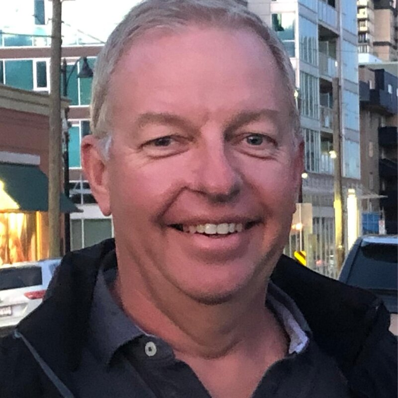
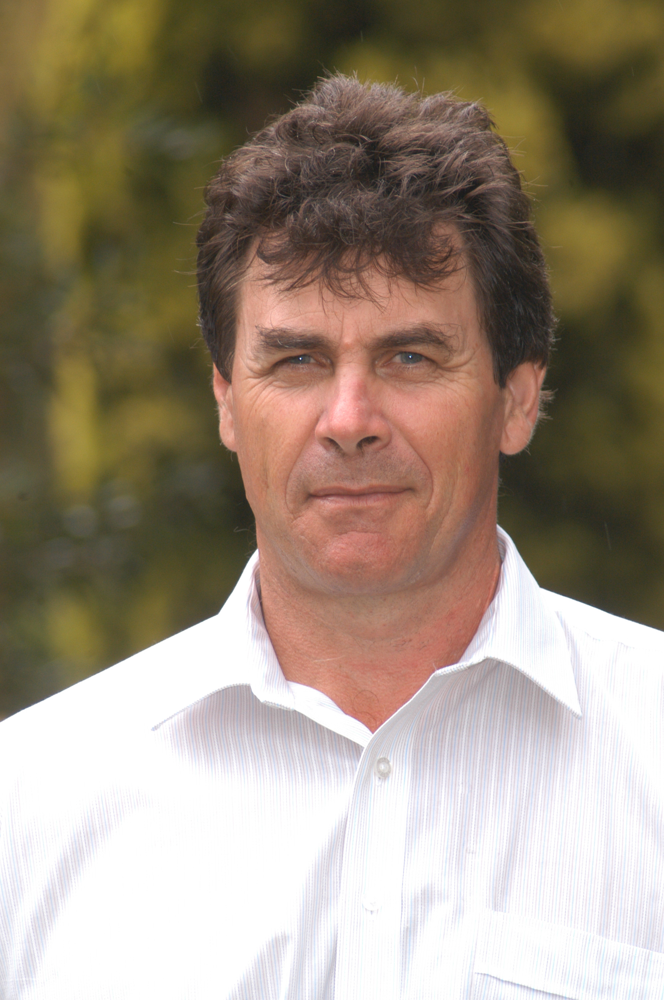

We bring 25 years of hands-on experience to every engagement — no generic frameworks, no fresh-from-university advice.

Martin Tower has spent 25 years working across every dimension of Australia's recycled organics industry — from the very early days of source-separated collection through to the sophisticated FOGO systems that councils are now grappling with. His career spans operational management, facility design oversight, market development, and strategic advisory roles for some of Australia's largest composting operators.
He holds an MBA to back his leadership grounding from 18 years as an Army officer. Martin served as a director of the Australian Organics Recycling Association for 6 years. He has designed and built composting systems and implemented Standard Operating Procedures across a range of facilities while assisting start-ups to reach operational maturity.
In the marketing space he has developed long-term off-take contracts and worked with agriculture experts to grow markets for compost in broad acre agriculture, horticulture and infrastructure.
Martin's background is deliberately cross-disciplinary. He combines the agronomic understanding of how organic material behaves in soil systems with the commercial acumen to structure bankable projects and the regulatory literacy to navigate the increasingly complex approvals environment across Australian jurisdictions.
What makes his advisory work distinctive is the combination of genuine operational experience — he has managed composting facilities, not just advised on them — with a strategic perspective that keeps commercial sustainability and practical achievability at the centre of every recommendation.
He established Radicle Agriculture Pty Ltd to offer that depth of knowledge directly to councils, agribusinesses, and regional enterprises, without the overhead or the commercial conflicts that come with being attached to an equipment supplier or an engineering firm. The advice is independent. The interest is in getting your project right.

David Hall is a highly regarded independent agronomist and soil health specialist with over 30 years of experience across Queensland's diverse agricultural landscapes. Renowned for his pragmatic approach to soil science, David bridges the gap between complex research and on-farm application, specialising in crop nutrition, soil fertility, and the remediation of soil constraints.
David is recognised as a leading authority on the use of recycled organics — including composts, mulches, and bio-fertilisers — as a strategic tool for building resilient farming systems. His focus is on the circularisation of carbon and nutrient flows, helping producers integrate organic amendments to improve soil biology, combat soil constraints, and guide farmers toward closed nutrient cycles that reduce input costs.
With a deep understanding of Queensland's varied environments — from the horticultural hubs of Bowen to the broadacre grains and dairy regions — David provides advisory services across horticulture and vegetables, dairy and fodder production, and grains, cereals and pastures. A cornerstone of his career is farmer education: his long-running "Shed Talks" and field-day briefings are valued for their plain-English translation of technical soil data into actionable management plans.
Soil health challenges and solutions in the Bowen Gumlu growing region — Bowen Gumlu Growers Association
We are not engineers, equipment suppliers, or project managers for hire. We are your independent expert — brought in to tell you what is actually achievable, at realistic cost, before you commit.
We have no commercial relationship with equipment suppliers, construction firms, or processing operators. Our only interest is the quality of the outcome for you.
Every recommendation is stress-tested against operational reality. We have managed facilities and sold compost — we know what works on the ground, not just on paper.
We understand that sustainability requires financial viability. Cashflow, revenue strategy, and cost structure are integral to every piece of advice we give.
Every situation is different. Tell us about yours and we'll come back to you within 48 hours with an honest assessment of whether and how we can help.